Bibles & Story Bibles
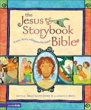
Pastor Drew's pick- Pastor Drew's pick
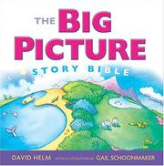
Approved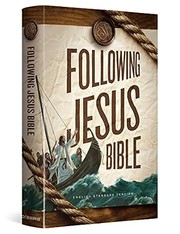
Grace Books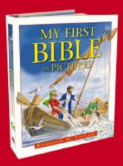
Grace Books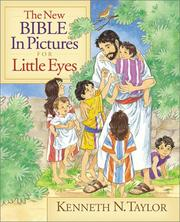
The New Bible in Pictures for Little EyesMoody PublishersFor the youngest children.Get it at Grace Books →Grace Books
Big Truths for Little Hearts
Books that teach children who God is and what He has done.
- Big Theology for Little HeartsCrosswayBoard books on single doctrines. Grace Books carries Creation and The Church.Find it at Grace Books →Start hereGrace Books
- Start hereGrace Books
- Grace Books
- Everyone a Child Should Know10ofThoseShort biographies of heroes of the faith.Get it at Grace Books →Grace Books
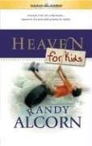
Grace Books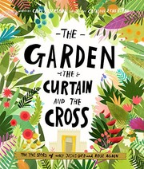
Grace Books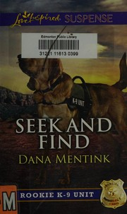
Grace Books- Baby Believer primersHarvest HouseHoly Week, Let There Be Light, and Jesus Heals.Find it at Grace Books →Grace Books
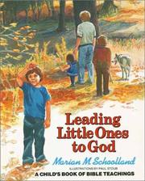
Leading Little Ones to GodMarian SchoollandA classic children's devotional on the basics of the faith.Find it →Approved
Storybooks
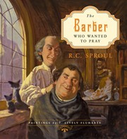
Start herePastor Drew's pick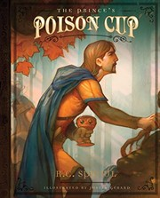
Grace Books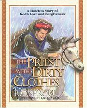
Grace Books- Grace Books
- Grace Books
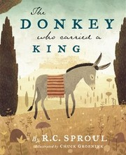
Grace Books- Grace Books
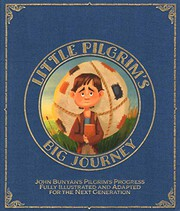
Little Pilgrim's Big JourneyLithos KidsThe Pilgrim's Progress retold for children.Get it at Grace Books →Grace Books
Hard Topics, Gently
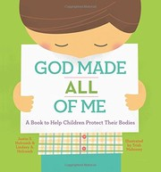
God Made All of MeJustin & Lindsey HolcombHelps parents teach young children that their bodies are God's good gift and how to keep them safe.Find it →Pastor Drew's pick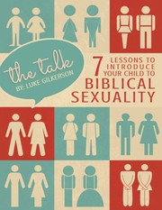
Approved
Reading Aloud Together
Good stories for families and classrooms to read together.
 A Christmas Carol: Reader's EditionCharles Dickens · edited & abridged by Drew Buell · Cool PublishersPastor Drew's own edition, revised and abridged for reading aloud as a family.From Cool Publishers →Start herePastor Drew's pick
A Christmas Carol: Reader's EditionCharles Dickens · edited & abridged by Drew Buell · Cool PublishersPastor Drew's own edition, revised and abridged for reading aloud as a family.From Cool Publishers →Start herePastor Drew's pick Start herePastor Drew's pick
Start herePastor Drew's pick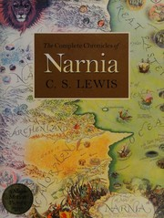
Pastor Drew's pick- Pastor Drew's pick
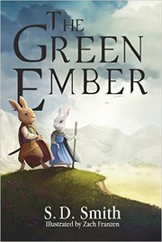
Pastor Drew's pick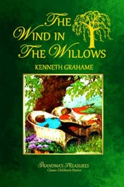
Pastor Drew's pick- Pastor Drew's pick
- Pastor Drew's pick
- Pastor Drew's pick
- Pastor Drew's pick
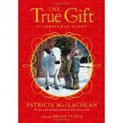
Pastor Drew's pick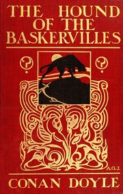
NewPastor Drew's pick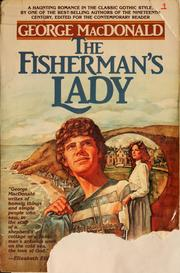
NewPastor Drew's pick
Reviewing this draft?
Thank you for helping. As you read, jot down anything you would add, remove, or move, and anything in a note that seems off. Then send your thoughts to Pastor Drew.